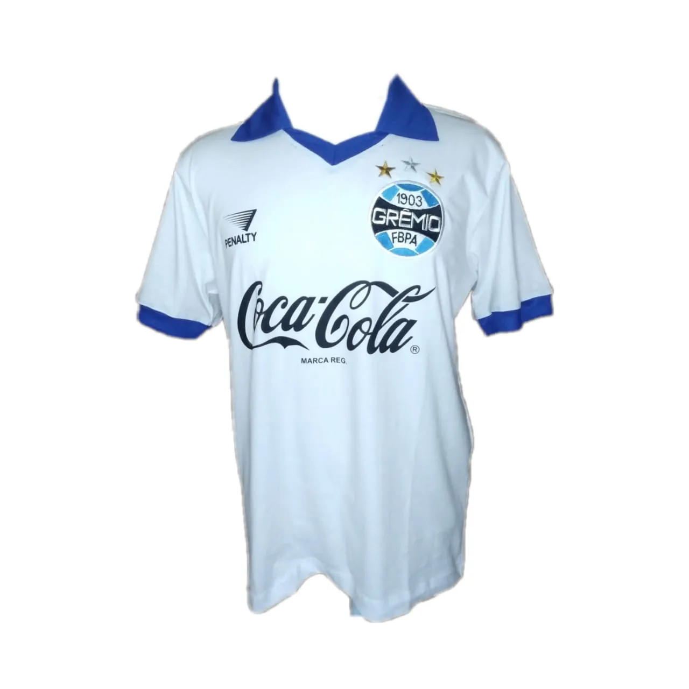

LOGO

O retratado na logomarca do site é Hugo de León, zagueiro e ídolo do Grêmio que atuou entre 1981
e
1984. Na logomarca, está representada a lendária foto em que ele sangra enquanto ergue o título
da
Libertadores pelo Grêmio em 1983, demonstrando sua raça e dedicação à camisa tricolor.
DESIGN DO SITE

O design deste site foi baseado na segunda camisa do Grêmio de 1989, icônica pelo patrocínio da
Coca-Cola e por ter sido usada durante a campanha que levou o Grêmio a ser campeão da sua
primeira
Copa do Brasil. A camisa se destaca por seus pequenos detalhes em azul, números e patrocínio em
preto, com destaque para o branco, que é a cor principal do uniforme.
REFERÊNCIAS
Todas as informações que estão neste site foram retiradas de fontes oficiais e confiáveis.
SITES UTILIZADOS
Site Oficial do Grêmio Foot-Ball Porto Alegrense
Outro site utilizado é o Grêmiopédia, um projeto feito por grandes torcedores que idealizaram
uma
enciclopédia sobre o Grêmio. É um site confiável e incrível, com milhares de informações
precisas e
completas sobre o Grêmio.
Grêmiopédia
(Todos os créditos de informações e imagens a Grêmiopédia e ao site oficial do clube)
IMAGENS ADICIONAIS
CRÉDITOS
Lance - Imagem Grêmio 1983
NSC
Total - Imagem Grêmio 1995
Mílton
Jung - Imagem Grêmio 2001
GZH
- Imagem Grêmio 1997
GZH
- Imagem Grêmio 1999
GZH
- Imagem Grêmio 2017
Correio
Braziliense - Imagem Grêmio 2016
Ge.Globo
- Imagem Grêmio 1989
O
Curioso do Futebol - Imagem Grêmio 1994
ESPN
- Imagem Grêmio 2015
CBF
- Imagem Grêmio - 2016
Portal do
Grêmista - Imagem Grêmio 2023
E360
- Imagem Grêmio 2023
UOL
- Imagem Grêmio 2024
Terra
- Imagem Grêmio 2018
Fut
Retrô -
Imagem Grêmio Camisa 1989